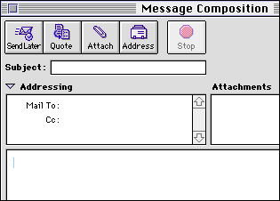
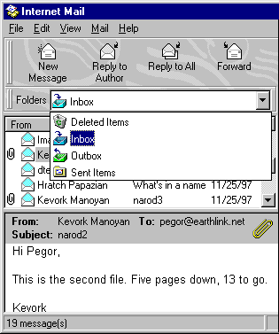

Brief introduction to the Internet and the World Wide WebThe Internet is the world's largest computer network. It is an interconnected, spiderweb-like system of millions of computer networks linked with telecommunications software and hardware, based on a set of standard technologies. The connection process to the Internet is the following: A personal computer (client) with a graphical user interface such as Windows or MacOS runs a program (browser) that downloads data from another computer connected to the network (server). A protocol is a set of rules for how computers can communicate with each other. The Internet Protocol is the set of rules for how computers can communicate over the Internet. Until late 1993, the Internet's unexciting, text-based appearance and confusing commands were too impractical for everyday use by non-experts. However, the Internet's development has been spectacular since then. Advances in the software used to navigate the Internet have opened its vast potential to anyone that is interested in exploring its multimedia features. The Internet offers an easy and fast exchange of information between the different users of the network. The main services available on the Internet are:
Today, the World Wide Web (WWW or just the "Web") is the fastest growing, most exciting component of the Internet. It almost re-invented the concept of how people can use the Internet. Fully graphical, including text, graphics, video, and sound, the Web gives users the ability to simply click on a word or graphic to travel to another computer anywhere on the Internet. Each page, or site on the web, has a unique address, referred to as a URL (Universal Resource Locator). The WWW service, together with email, is the most popular service used for the distribution and exchange of information over the Internet. Use of Web browsersAn important element of the web system is the browser. A browser is a software tool or program that looks (browses) at various kinds of Internet resources such as the Web. Browsers are available in text-only or fully graphical versions. Most of the computers connected to the network have new or old versions of the most popular graphical programs such as Netscape Navigator or Microsoft Internet Explorer. The fact that Internet standards are applied by consensus and leave room for interpretation makes Web pages appear differently to different users. Improvements in browsers are taking place at a rapid pace, and the competition between browser makers has resulted in the evolution from a simple web client, to packages which include an email client, news client, software for collaboration from a distance, and Web page authoring tools. This is the case of the new versions of the two main browsers Netscape Communicator 4.0 and Microsoft Internet Explorer 4.0. A Word or two about emailEmail (electronic mail) is the most widely used online tool. It allows you to send and receive messages over the Internet. Because the person to whom you send email doesn't have to be connected at that moment, your outgoing message can be carefully composed offline, delivered instantly and even sent at specific times. People who aren't even "on the Internet" can send and receive email. Anybody with an account with a commercial online service is a potential recipient of an email message. Email can be used for sending messages to one or a few people at a time, but it can also be used for large group discussions by subscribing to a discussion list. Sending emailThis is a detail of what an email composition window looks like on Netscape Navigator 3.0 for the Macintosh. Other programs will have a slightly different appearance but should contain the same basic information. To send email, you should access your email software and choose the option that allows you to "compose" your message.
Receiving emailWhen you have mail waiting to be read, your mail program will display a list of pending messages. This should show you which messages are new, and which are unread. Depending on your program, you might see the name of the sender, the date it was sent on and its subject. This is a detail of what a list of incoming messages looks like in Microsoft Internet Explorer 3.0 for Windows. With your email software you can perform operations such as:
Some notes about email* The most important information you need for email is the Internet email address of the person you want to send mail to. Here are two fictitious examples: vahan@arax.prov.fr, nacci@linker.net. Addresses have the form user@domain. user ID = personal user name of a specific recipient at that domain (i.e. vahan or nacci) host = name of a specific computer (i.e. arax) domain name = where a group of recipients do their email transactions (i.e. arax.prov.fr: a domain in France, or linker.net: an Internet Service Provider called Linker) top level domain = the group of letters after the last "." (i.e. "fr" for France, or "net" for network) Common top level domains on the Internet in the United States:
Domains outside the United States generally end in a two-letter country suffix (i.e., in Armenia: .am) Most email addresses are case insensitive, meaning that it doesn't matter whether you type in upper or lower case. Experts advise, however, that you type an address exactly as it appears. * Some email programs let you attach a file (i.e. a word processor document) to your email message. However you may run into some problems if the recipient is not able to open the kind of file you are sending or if the recipient's mail program is not able to work with file attachments in the same way yours does. * Email netiquette: certain rules of etiquette apply to email, and it's important to be familiar with them. See the following site which will open in a separate browser window if you click below (just close it when you are done):
* You do not have to add your return address to an email message. The email program will add it automatically. * The simplest way to insert images (pictures or graphics) in your email message is using the option of attaching file(s) to your message. * Mail delivery problems: "host unknown or host not found": It is probably a spelling error in the domain name, although you may have an incorrect address. "User unknown": There is probably a typo in the username part of the address. Also check the domain name. "Mail can't be delivered": Usually the server will try to deliver the mail several times over a few days before returning it to your mailbox when a network or hardware problem occurs.
Search enginesMost of the Internet sites that you'll encounter have free public access. However, the biggest problem you will face is how to find the information you need, because resources are placed on the Internet voluntarily by the community for the community. No one is required to put their resources into any particular format, nor is there any single agreed-upon standard of how resources should be made available. A Search Engine is a piece of software, available to all users on the Web which allows the user to locate all related sites using a keyword search. As with all tools, you need to learn how to use the Internet search tools to get the most out of them. This learning comes both from reading about them and from trial-and-error use. Here is some basic information about the most popular search engines. You can read more about them by accessing the help files of the respective search engines.
AltaVista searches by keywords, which it derives from the text of a Web page. It creates complete indexes of every word on every Web page or Usenet. AltaVista provides both simple and advanced searches. Advanced searches include all the features of simple ones, in addition to the use of Boolean and proximity operators, grouping of terms, and results ranking by keyword.
Excite uses a combination of text and subject indices to search either by keyword or by concept (you can choose which way you would like to search.) Concept searches find documents related to the idea of your search, and not just documents explicitly containing the search terms you enter.
WebCrawler searches for documents within a website that matches your search terms, not just websites as a whole. While directories such as Yahoo refer to sites that cover the category subject you are interested in, WebCrawler searches the contents of pages within a site, and for a match with the search terms you entered, even if the site itself is unrelated to what you are searching for. It builds an impressively complete index and does a good job of sorting the documents it finds according to how closely they match your search items. However, because it indexes the contents of documents, it may also find many links that you're not interested in. WebCrawler also includes a catalog of pre-classified subjects (directory services).
Lycos is a web-indexing robot. That means Lycos software robots actually go out and travel the Internet every day looking for new web sites. Lycos searches by keywords and it is now offering listings grouped by category. An interesting feature of this search engine is the ability to locate pictures and sounds on the web.
Infoseek searches by keywords, scanning the information in its database. With Infoseek, you can search a variety of databases, including the web, Usenet, and Email addresses. Infoseek gives a score to your search results and returns the 'best' matches to your query. Infoseek also groups websites into categories, similar to Excite.
HotBot is the search engine of Wired magazine. It searches by keywords allowing you to specify both the number of documents it returns, as well as the format in which it returns your query. HotBot is based on a network of numerous personal compters running a system designed by Inktomi, an Internet software company.
Yahoo is not a search engine, but strictly a hierarchically arranged subject index. Browsing Yahoo is the best way to surf for good sites when you don't know (or perhaps care) where exactly you are going. It is also the best way to find good 'starter' sites, from which you can branch out to more specialized ones. |
|||||||||||||||||||||||||||||||||